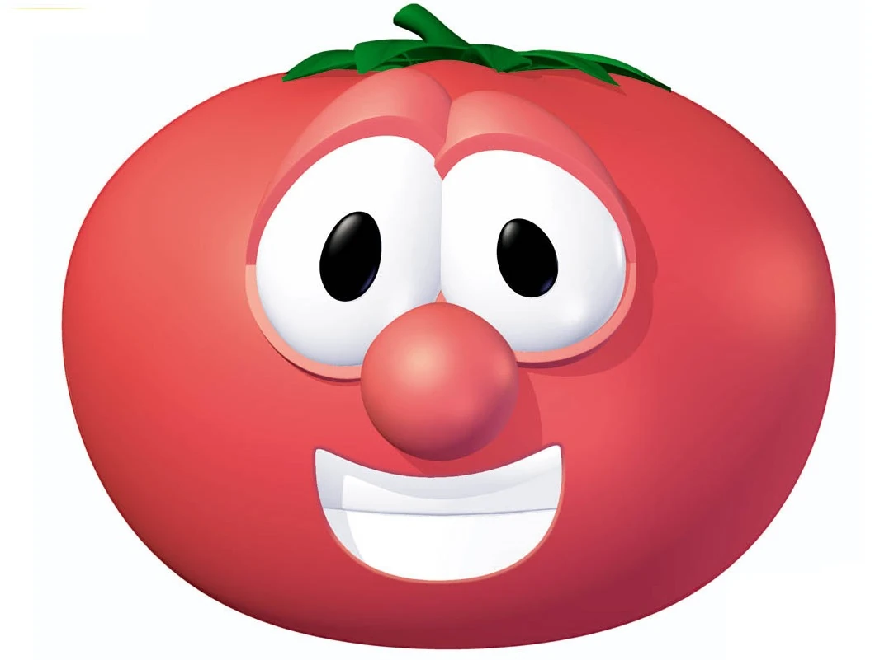
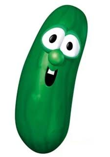

VeggieTales Characters
Bob the Tomato

Bob the Tomato © 1993 Big Idea Entertainment, LLC
Bob the Tomato is one of the show's main characters, often serving as a narrator, though, like all of the characters, he also plays roles in the stories. His seriousness contrasts well with the silly nature of his cohost Larry the Cucumber, though Bob can sometimes be shown to be a bit high-strung and particular, sometimes becoming upset or irritable when things don't go according to plan. However, he always makes sure to make things right, and his end goal is always to help people get closer to God.
Larry the Cucumber

Larry the Cucumber © 1993 Big Idea Entertainment, LLC
Larry the Cucumber is Bob's silly cohost, often playing the role of major characters in the stories, whether that be a biblical prophet or a goofy superhero. Despite his goofy antics, he is just as commited to helping people as Bob the Tomato is. Larry is also famous for his "Silly Songs" segments that occur at roughly the midpoint of the show.
General information about the VeggieTales show here